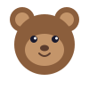
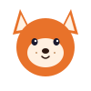
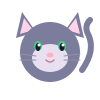
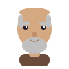

Wolkom! (Welcome!) West Frisian (Frysk) is the closest living relative of English. Spoken by about 500,000 people in Friesland, Netherlands, it shares many words with English that you'll recognize right away.
Meet Your Frisian Buddies
Your characters will teach you Frisian. Tap the speaker to hear them!

Edam
Goeie! Ik bin Edam. Hoe giet it?
Hello! I am Edam. How's it going?
Gosia
It giet goed, tankewol! En mei dy?
It's going well, thank you! And with you?

Steve
Moarn! Ik bin Steve. Lit ús Frysk leare!
Morning! I'm Steve. Let's learn Frisian!

Rita
Miau! Ik bin Rita. Noflik om kennis te meitsjen!
Meow! I'm Rita. Nice to meet you!
James
Kom op! Ik bin James. Ik bin hiel sterk!
Come on! I'm James. I'm very strong!
Diego
Bysûnder! Ik bin Diego. Ik hâld fan ûndersykjen.
Remarkable! I'm Diego. I love researching.
Sam
Wauw! Ik bin Sam. Ik wol sa graach leare!
Wow! I'm Sam. I really want to learn!

William
Goedemiddei. Ik bin William. Kennis is macht.
Good afternoon. I'm William. Knowledge is power.
Essential Greetings
Frisian
English
Goeie
Hello
Moarn
Good morning
Goedemiddei
Good afternoon
Goedenacht
Good night
Oant sjen
Goodbye (see you)
Tankewol
Thank you
Asjebleaft
Please
Ja / Nee
Yes / No
Frisian Looks Like English!
Frisian and English split apart about 1,500 years ago. Many basic words are almost identical: